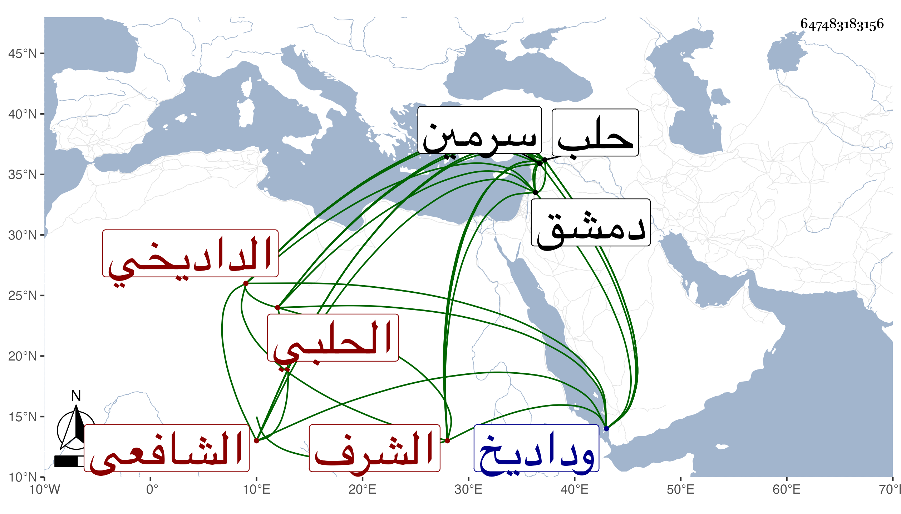

0902Sakhawi.DawLamic.ITO20230111-ara1.EIS1600.647483183156
Biography ID: 647483183156
91
أبو بكر بن سليمان بن صالح الشرف الداديخي الأصل الحلبي الشافعي وداديخ قرية من عمل سرمين من غربيات حلب . أخذ النحو بحلب عن أبي عبد الله وأبي جعفر الأندلسيين وتفقه بها على أبي حفص الباريني وبدمشق على التاج السبكي بل أخذ فيها أيضا على الشمس الموصلي والحافظ ابن كثير وبرع في الفقه وأصوله وناب في تدريس المدرسة الصاحبية تجاه النورية ثم استقل بها وسكنها مديما للاشتغال والأشغال والتصنيف والإفتاء والكتابة بحيث كتب كثيرا من كتب العلم ونفع الناس وولي القضاء بحلب مدة وكان دينا عالما . مات بدير كوش من أعمال حلب بعد كائنة تمر في ربيع الآخر سنة ثلاث ودفن هناك ذكره ابن خطيب الناصرية ثم شيخنا وأرخه في جمادى الأولى فالله أعلم .
